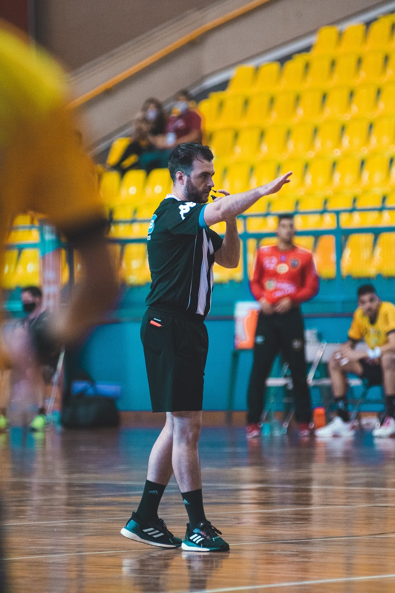

Handball ist eine aufregende Mannschaftssportart, die weltweit beliebt ist. Um einen
reibungslosen Ablauf des Spiels zu gewährleisten und Fairness zu gewährleisten, gibt es eine
Reihe von Regeln, die im Handball befolgt werden müssen. In diesem Text werde ich
ausführlich
auf die Regeln im Handball eingehen.
1. Spielzeit: Ein Handballspiel besteht aus zwei Hälften von jeweils 30 Minuten. Bei einigen
Jugend- oder Amateurspielen kann die Spielzeit verkürzt sein.
2. Mannschaften: Jede Mannschaft besteht aus sieben Spielern, darunter sechs Feldspieler und
ein
Torwart. Jede Mannschaft kann bis zu sieben Auswechselspieler haben, und Spielerwechsel sind
während des Spiels jederzeit erlaubt.
3. Das Ziel: Das Hauptziel im Handball ist es, den Ball in das gegnerische Tor zu werfen und
mehr Tore als die gegnerische Mannschaft zu erzielen. Das Tor ist drei Meter breit und zwei
Meter hoch.
4. Dribbeln: Ein Spieler darf den Ball dribbeln, ähnlich wie beim Basketball. Dabei darf er
den
Ball in einer Hand halten und den Ball auf den Boden prellen, während er sich fortbewegt.
Allerdings darf der Spieler den Ball nicht zweimal hintereinander dribbeln.
5. Passspiel: Die Spieler können den Ball durch Pässe an ihre Teamkollegen weitergeben. Ein
Spieler darf den Ball nicht zwei Mal hintereinander fangen, es sei denn, er hat zuvor einen
Wurfversuch gemacht und den Ball nicht ins Tor geworfen.
6. Schritte: Ein Spieler darf maximal drei Schritte machen, ohne den Ball zu dribbeln oder
zu
prellen. Danach muss er den Ball weitergeben, abspielen oder einen Wurfversuch machen. Es
gibt
auch eine Regel, die "Prellen" genannt wird, bei der ein Spieler den Ball berühren und
wieder
fangen kann, solange er nicht mehr als drei Schritte gemacht hat.
7. Verteidigung: Die Verteidiger dürfen den Angreifern den Ball abnehmen, indem sie
versuchen,
den Ball zu blocken, zu fangen oder zu stehlen. Es ist jedoch nicht erlaubt, den Angreifer
mit
den Händen, Armen oder Beinen zu schlagen, zu stoßen oder festzuhalten.
8. Freiwürfe: Es gibt verschiedene Arten von Freiwürfen im Handball, wie zum Beispiel den
7-Meter-Wurf, den Strafwurf und den Abwurf. Freiwürfe werden für Regelverstöße oder
Fehlverhalten der Spieler verhängt und bieten der gegnerischen Mannschaft die Möglichkeit,
ein
Tor zu erzielen.
9. Zeitstrafen: Spieler, die gegen die Regeln verstoßen, können mit Zeitstrafen belegt
werden.
Bei einer Zeitstrafe muss der betreffende Spieler eine bestimmte Zeit (üblicherweise zwei
Minuten) auf der Strafbank verbringen, und seine Mannschaft muss in dieser Zeit mit einem
Spieler weniger spielen.
